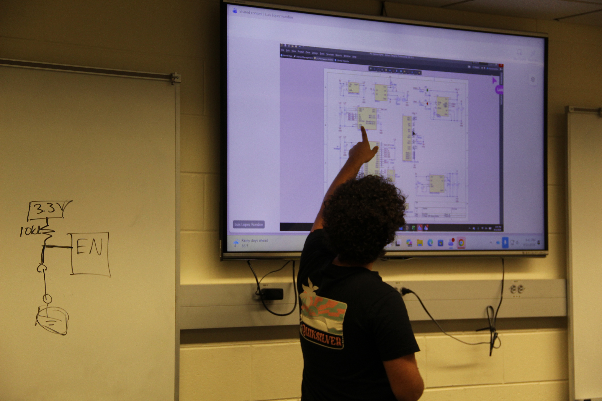
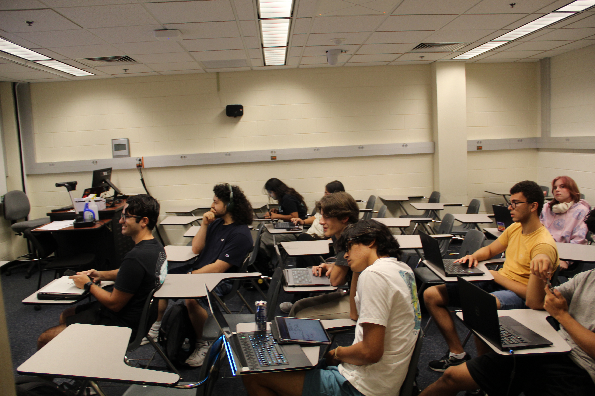

Overview
The spoon is an EXO project to help people with Parkinson's eat more steadily by actively counteracting their tremors. My part is the electronics: I'm designing the custom PCB that runs it, and I'm using that board as the example project for teaching newer EXO members how to design PCBs.
The PCB
The board is built around the ESP32-C3-MINI-1-N4. To keep it small, there's no USB data connection: firmware is flashed over UART (TX/RX), and the USB-C port is used only for charging.
It runs from a 1S LiPo. A TP4056 handles charging over USB-C, a DW01A + FS8205 pair protects the cell from over-charge, over-discharge, and shorts, and a boost converter steps the battery up for the servos.
Teaching PCB design
I use the spoon board as the running example in an Altium workshop I run for IEEE at USF EXO. About 10 members have gone through it so far. They walked away with the basics of PCB design, the full design process, how to research parts and read datasheets, and their first board: a 6-axis IMU.


What's next
- Finalize the layout and order boards
- Assemble and test the PCB